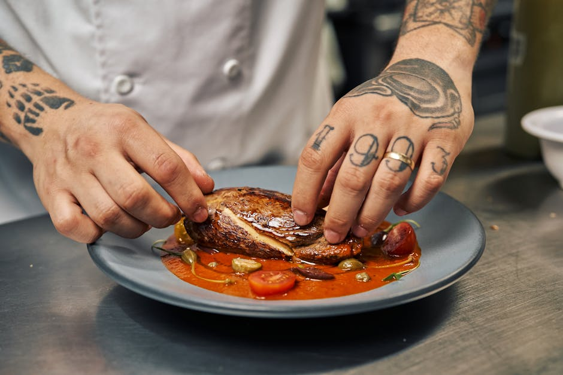
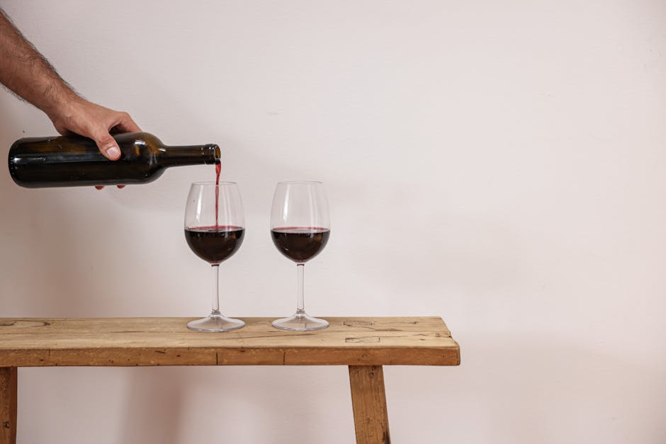

La mappa definitiva dell'eccellenza culinaria.
Scopri i ristoranti consigliati, le vere osterie e la migliore cucina tradizionale locale selezionata dai nostri esperti per regalarti esperienze indimenticabili.

Scopri i ristoranti consigliati, le vere osterie e la migliore cucina tradizionale locale selezionata dai nostri esperti per regalarti esperienze indimenticabili.

Conusant Grid ti guida attraverso il vasto e affascinante panorama della gastronomia locale. Dalle storiche trattorie di quartiere ai templi dell'alta cucina contemporanea, la nostra missione è raccontare le storie di chi lavora con passione le materie prime.
Attraverso recensioni ristoranti rigorose e analisi dettagliate, costruiamo una mappa affidabile per chi cerca l'eccellenza. Affidati alle nostre selezioni per scoprire i veri custodi della cucina tradizionale e vivere esperienze a tavola che emozionano.

Analisi dettagliate e imparziali per aiutarti a scegliere la tua prossima destinazione culinaria. I nostri critici visitano in anonimato i locali per offrirti recensioni ristoranti trasparenti. Scopri le eccellenze premiate e i tavoli imperdibili della tua città, con un occhio di riguardo alla qualità delle materie prime e alla cantina.

Il cuore pulsante della nostra cultura gastronomica. Abbiamo tracciato una mappa ragionata per trovare i sapori autentici e genuini delle storiche trattorie e osterie. Qui celebriamo la vera cucina tradizionale, le ricette tramandate di generazione in generazione e l'atmosfera conviviale che solo i locali storici sanno offrire.

Rimani costantemente aggiornato sulle evoluzioni del settore. Selezioniamo per te i ristoranti consigliati per ogni specifica occasione: dalla cena romantica al pranzo di lavoro. Esploriamo le nuove aperture, i talenti emergenti ai fornelli e le tendenze che stanno ridefinendo la gastronomia locale contemporanea.
I nostri esperti visitano regolarmente i locali del territorio in forma anonima, valutando la qualità delle materie prime, la tecnica di cottura, il servizio e l'atmosfera. Solo i locali che mantengono standard eccellenti entrano nella nostra lista di ristoranti consigliati.
Certamente. Crediamo fermamente che l'eccellenza non sia solo legata all'alta cucina. Dedichiamo ampio spazio alle trattorie e alle osterie che offrono una cucina tradizionale eccellente a prezzi accessibili, celebrando il miglior rapporto qualità-prezzo.
Il mondo della gastronomia locale è in continua evoluzione. Aggiorniamo le nostre recensioni ristoranti annualmente e pubblichiamo costantemente articoli sulle nuove aperture per garantirti informazioni sempre fresche e affidabili.
Assolutamente sì. Accogliamo sempre con piacere le segnalazioni dei nostri lettori. Se conosci una trattoria segreta o un ristorante che merita attenzione, contattaci: il nostro team valuterà la segnalazione per una possibile visita futura.
La sezione dedicata alla cucina tradizionale si concentra sulla valorizzazione delle ricette regionali, sull'uso di materie prime locali e sulla conservazione del patrimonio culinario. Evidenziamo quei locali che mantengono vive le radici della nostra cultura del cibo, rifiutando le scorciatoie industriali.
"Le loro recensioni ristoranti sono le uniche di cui mi fido. Grazie a Conusant Grid ho scoperto un'osteria fuori città che serve una pasta fatta in casa indimenticabile."
Marco V. — 2026
"Quando ho bisogno di ristoranti consigliati per cene di lavoro importanti, so esattamente dove guardare. Una bussola indispensabile per la gastronomia locale."
Elena R. — 2026
"La sezione dedicata alla cucina tradizionale e alle vere osterie è scritta con una passione evidente. Un vero e proprio manifesto per la conservazione del nostro patrimonio culinario."
Lorenzo G. — 2026
Hai suggerimenti su nuove trattorie da visitare o vuoi proporre un locale per le nostre recensioni ristoranti? Inviaci un messaggio. Il nostro team editoriale legge tutte le segnalazioni.
Via Ottavio Gasparri, 13/17
00152 Roma RM, Italia